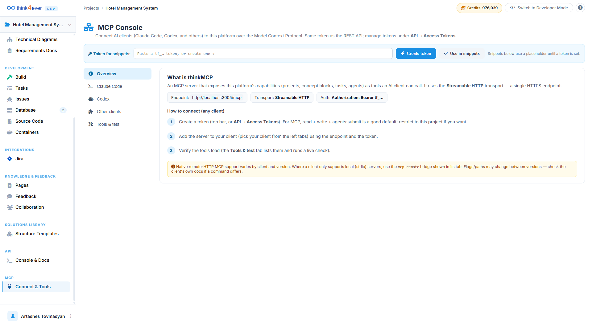
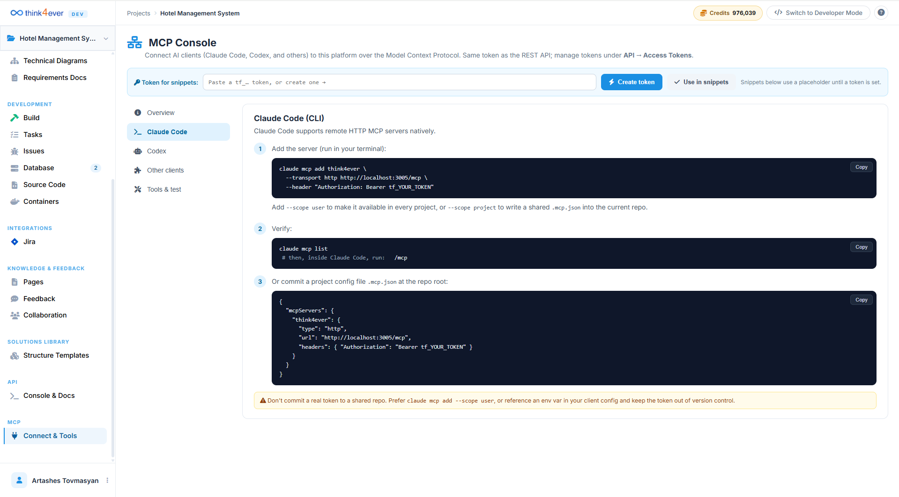
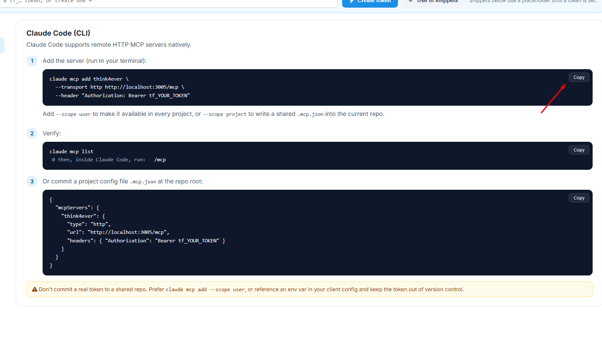
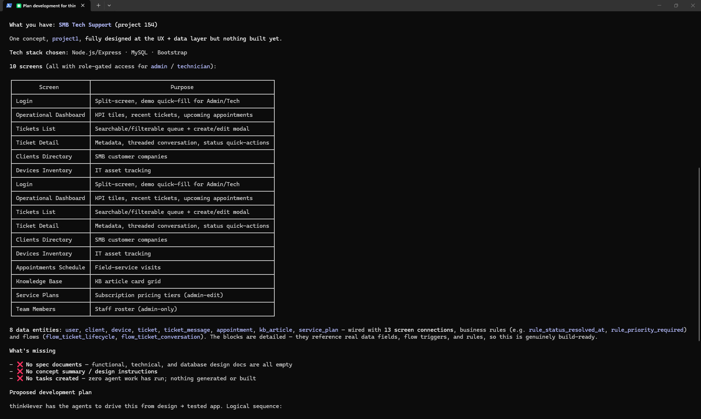
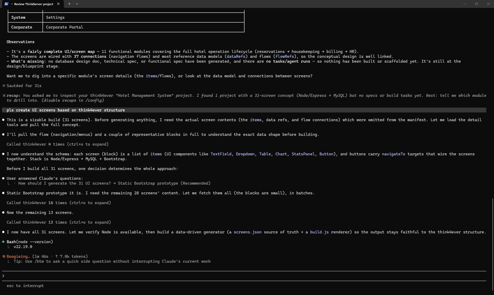
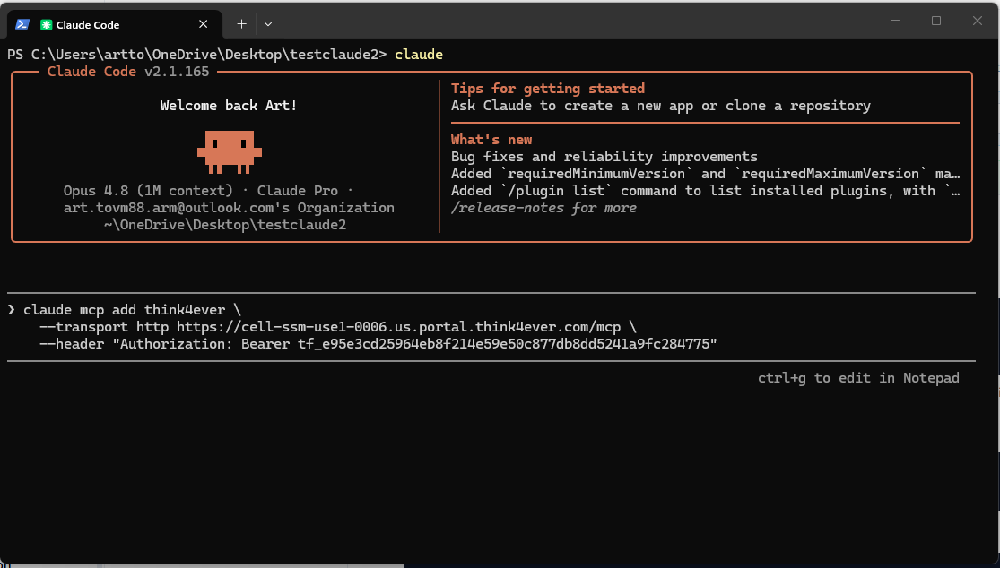
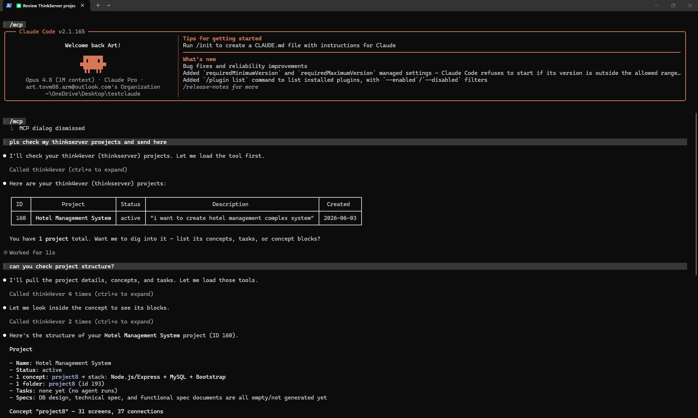

Think MCP
Overview
The Think MCP Console implements the open-source Model Context Protocol (MCP) standard directly into Think4ever’s integration framework via the Connect & Tools panel. Think MCP serves as a secure, live communication bridge, exposing the platform's architectural design capabilities as standard tools that an external AI client can call dynamically.
Instead of operating in an isolated terminal workspace without structural awareness, external AI development assistants can connect directly to this single HTTPS endpoint. This unified context layer allows local agents to safely query project properties, database objects, and active milestones, ensuring all generated code remains strictly aligned with the centralized blueprint.

Technical Protocol Architecture
Think MCP functions natively as an MCP Server, utilizing an optimized Streamable HTTP transport mechanism to communicate with external applications.
Global Endpoint Metadata
- MCP Server Endpoint Route: https://cell-ssm-use1-0005.us.portal.think4ever.com/mcp
- Transport Protocol Type: Streamable HTTP
Universal Core Method Set
Once an external developer tool binds to the server interface, it automatically inherits programmatic context capabilities spanning the entire platform architecture:
- Project Models: list_projects, get_project, list_concepts, and get_concept_flow.
- Block System Engineering: list_concept_blocks, get_concept_block, add_concept_block, and update_concept_block.
- Milestone Coordination: list_tasks, get_task, create_task, and set_task_status.
- Agent Infrastructure Execution: submit_agent_run and list_folders.
Establishing Connection Authentication
The Think MCP engine shares its underlying authentication token pool with the core REST API layer. To connect an external development client safely, complete the following procedural phases:
Step 1: Create a Secure Token
Navigate to either the platform's global top bar configuration panel or navigate through API $\rightarrow$ Access Tokens. Alternatively, click the blue Create token action element positioned inside the header layout of the MCP Console tab.
Recommended Token Security Scopes
For typical local client integrations, configuring your token with a combined permission layer of read + write + agents:submit is highly recommended to support automated code asset verification. For increased team security, toggle access constraints to explicitly restrict the key's authorization scope to your active project instance exclusively.
Step 2: Register the Server inside Your Client
Copy the auto-generated connection string parameters from the console tab window, then access your local development application configurations to attach the remote Think MCP URL alongside your secure bearer key string (tf_YOUR_TOKEN).
Step 3: Execute Connection Diagnostics
Open the Tools & test sub-tab inside your workspace panel. Trigger a live connection verification pass to force-list available system schemas and ensure the background RPC channel is functioning flawlessly.
Think MCP & Claude Code Integration Manual
The Think MCP Console seamlessly connects native terminal assistants to your centralized project workspace using the open-source Model Context Protocol (MCP) standard. By linking Claude Code (CLI) directly to your live environment, you provide your local AI engineer with complete context over your application's architecture, data models, and milestones, eliminating isolated or broken code generation.

Establishing Client Authentication
Think MCP and the standard REST API draw from a unified token pool. Before running terminal commands, you must provision an access token to authorize your local client.
- Token Provisioning: Navigate to the top bar of the platform interface or head to API $\rightarrow$ Access Tokens. Alternatively, use the Create token button inside your current console workspace.
- Recommended Scopes: For seamless Claude Code synchronization, ensure your token is granted read + write + agents:submit privileges
Mounting Think MCP in Claude Code
Claude Code supports remote HTTP MCP servers natively out of the box. You can register the Think4ever server directly within your terminal workspace using two distinct methods.

Option A: Direct Terminal Registration
Execute the following transport configuration sequence directly inside your active command-line terminal to register the server:

-
Global Access Scope:
Append the --scope user modifier flag to the end of the
command to make the Think4ever server context universally
available across all terminal directories on your machine.

-
Project Access Scope:
Append the --scope project modifier flag instead to write a
localized, shared environment bridge into your active
development folder.
Option B: Root Repository Configuration Manifest
For engineering teams looking to standardize architectural context across multiple contributors, you can bypass manual terminal commands by committing a dedicated project config file named .mcp.json directly into the root directory of your source code repository:
{
"mcpServers": {
"think4ever": {
"type": "http",
"url": "https://cell-ssm-use1-0005.us.portal.think4ever.com/mcp",
"headers": {
"Authorization": "Bearer tf_YOUR_TOKEN"
}
} Connection Verification Protocols
Once you have applied your configuration via the terminal or a local JSON manifest, verify that the RPC connection channel is successfully initialized.
-
Step 1:
Run the protocol list command in your terminal to ensure the
client recognizes the tool mapping:

-
Step 2:
Start a fresh interactive session with your assistant, and
run the inline diagnostic check to confirm live tool
synchronization:
Bash
/mcp

Security & Version Control Guardrails
Operational Safety Notice
Never commit a live, unencrypted authentication token directly to a shared version control repository (such as public GitHub branches). >
If you are utilizing a committed .mcp.json file at your repository root to coordinate team environments, keep the token out of version control by running claude mcp add --scope user locally, or reference a secured local environment variable mapping ($THINK4EVER_TOKEN) within your client configuration strings instead.
Troubleshooting Guide
This centralized guide provides technical diagnostics, step-by-step resolution pathways, and error code definitions for both the Think API and Think MCP runtime environments. Follow these procedures if your automated scripts, continuous integration pipelines, or local AI terminal assistants fail to connect or execute tasks.
Core API Status & Error Code Reference
When an external client or programmatic pipeline receives an error, parse the outer JSON response envelope ("ok": false) and examine the returned error.code against the official status matrix:
| HTTP Status | error.code | Meaning / Core Resolution Context |
|---|---|---|
| 400 | BAD_REQUEST | Missing/Invalid parameters: The request body payload or query string variables fail strict schema validation. |
| 401 | UNAUTHORIZED | Missing/invalid token: The required Authorization header is missing, malformed, or the cryptographic token does not match known records. |
| 402 | INSUFFICIENT_CREDITS | Out of credits: Programmatic agent initializations and pipeline execution queues require active server resource capacity and are gated by your remaining account balance. |
| 403 | FORBIDDEN | Token missing a scope / project mismatch: The token signature is authenticated, but it lacks the necessary method privileges or project-level boundaries required for the request. |
| 404 | NOT_FOUND | Resource missing or not accessible: Resource missing or not accessible: The target URL path, project ID, block component, or task tracking identifier does not exist or has been deleted. |
| 409 | CONFLICT | State conflict: The payload introduces changes that conflict with the current system state, such as attempting to inject an item with a duplicate block ID. |
| 500 | INTERNAL | Unexpected server error: An unhandled exception occurred within the platform engine. If this error persists, contact system support. |
Resolving 401 UNAUTHORIZED Errors
- The Root Cause:The platform cannot validate your identity because the token is expired, missing, or malformed.
-
The Fix:
- Navigate to the Access Tokens manager tab inside the console interface.
- Confirm your token is active. If it has expired or been revoked, generate a new bearer string.
- Verify your script's HTTP header formatting. The token must be passed exactly as follows (including the single space after Bearer): HTTP
Authorization: Bearer tf_YOUR_TOKEN
Resolving 403 FORBIDDEN Errors
- The Root Cause:Your token is cryptographically authentic, but it lacks the precise functional permission level (scope) or project-specific access required to execute the action.
-
The Fix:
- Check the Scope column in your console definitions to identify the exact permission required for your target endpoint (e.g., agents:submit or tasks:write).
- Return to the Access Tokens tab and provision a new token.
- Explicitly check the necessary read/write method scopes and make sure the token's project boundary matches the active target project ID. For full local client capabilities, configuring read + write + agents:submit is highly recommended.
Resolving 402 INSUFFICIENT_CREDITS Errors
- The Root Cause:The request is authorized, but the background multi-agent compilation engine or execution queue has been throttled due to an empty resource balance.
-
The Fix:
- Check the top-right corner of the web interface workspace to find your active Credits counter.
- If your account balance is depleted, navigate to your team's billing and subscription profile to allocate additional infrastructure points before retrying queue tasks.
Resolving 400 BAD_REQUEST Errors
- The Root Cause:The request body structure or path variables failed automated system parsing schemas.
-
The Fix:
- Ensure you are not hardcoding outdated or mock parameter records into your automated scripts.
- You must fetch valid parameter keys dynamically from the environment before submitting a task execution payload. For example, query /v1/agent-types to pull a valid agent_type_id, and fetch /v1/projects/:id/folders to identify the correct target folder_id.
Think MCP Client & Transport Diagnostics
If local developer utilities—such as Claude Code (CLI), Cursor, or Codex—fail to establish a connection loop with the Model Context Protocol background layer, run through these protocol checks.
Client Fails to Bind / Transport Socket Timeouts
- The Root Cause: Support for remote HTTP MCP server endpoints varies depending on your IDE software and active build version. Some third-party clients can only communicate natively using local standard input/output (stdio) pipelines.
- TThe Fix: If your client does not natively process streamable remote HTTP transport connections, you must use an explicit Node.js bridge to map stdio streams over to the live server endpoint. Update your application's global configuration file (e.g., claude_desktop_config.json) to invoke the mcp-remote proxy module:
JSON
{
"mcpServers": {
"think4ever": {
"command": "npx",
"args": [
"-y",
"mcp-remote",
"https://cell-ssm-use1-0005.us.portal.think4ever.com/mcp",
"--header",
"Authorization: Bearer tf_YOUR_TOKEN"
]
}
}
}
Context Alignment Failures inside Claude Code
The Root Cause: The transport server setup was bound using highly restrictive localized scopes, which prevents the terminal assistant from fetching the architecture maps when you navigate away from a specific folder.
The Fix:
- To make the server globally accessible: If you want your system context universally available across every terminal directory and codebase workspace on your machine, register the tool with the user-level scope flag: Bash claude mcp add think4ever --transport http https://cell-ssm-use1-0005. "Authorization: Bearer tf_YOUR_TOKEN" --scope use r
- To isolate configuration states safely: If you prefer to purposefully lock the API credentials to an isolated repository so your team can collaborate securely without leaking personal tokens, run the command with the project-level scope flag instead. This writes a localized, self-contained .mcp.json manifest directly into the current repository root directory.
Sandbox Connectivity Verification Checklist
Use these three quick terminal diagnostics to completely rule out network firewalls, DNS routing blocks, or hidden syntax bugs before launching continuous delivery pipelines or complex multi-agent runs:
Step 1: Base URL Cluster Ping
Dispatch a clean head request from your local command line against your assigned workspace cluster instance path:
Verify that the cluster responds with an expected 200 OK or 401 Unauthorized block payload to confirm that the endpoint is reachable from your network.
Step 2: Live RPC Schema Enumeration
Test your token validation accuracy and remote transport capabilities simultaneously by manually dispatching a raw JSON-RPC tools/list sequence over the streamable HTTP channel:
Verify that the cluster responds with an expected 200 OK or 401 Unauthorized block payload to confirm that the endpoint is reachable from your network.
curl -X POST https://cell-ssm-use1-0005.us.portal.think4ever.com/mcp \ -H "Authorization: Bearer tf_YOUR_TOKEN" \ -H "Content-Type: application/json" \ -d '{"jsonrpc":"2.0","id":1,"method":"tools/list"}'
Review the response stream. A pristine connection will instantly return a clean JSON payload mapping out your project's active tool schema arrays (including list_projects, get_concept_flow, and submit_agent_run).
Step 3: Console Live Diagnostics Pass
If your local tool's terminal log streams remain unpopulated, open your web browser and navigate directly to the Tools & test sub-tab inside the Connect & Tools sidebar menu. Trigger a live connection check to view the real-time RPC transport frame directly on your screen, letting you isolate version disparities or syntax mismatches instantly.
Verify that the cluster responds with an expected 200 OK or 401 Unauthorized block payload to confirm that the endpoint is reachable from your network.